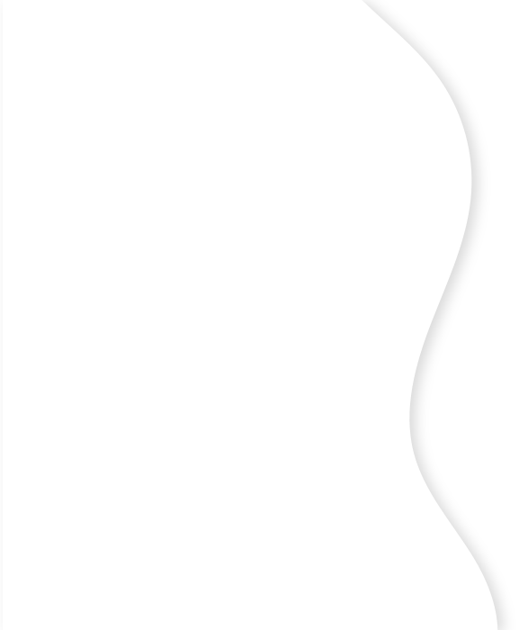
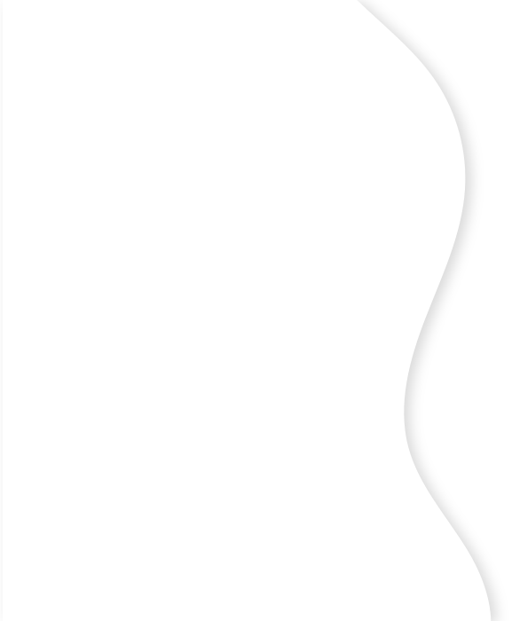
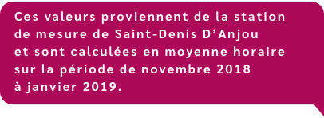
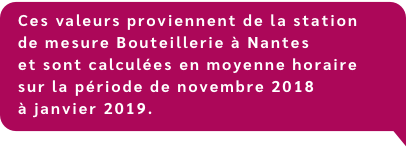

Vous voilà en zone rurale en Pays-de-la-Loire...

Source des données utilisées : https://data.airpl.org
Entre 7h et 8h, c’est l’heure de pointe. La concentration de NO2 est donc à son maximum.
À 17h, c’est l’heure de pointe. La concentration de NO2 est donc à son maximum.
À cette heure, la concentration de NO2 est au plus faible. Il y a peu de trafic.
À cette heure, la concentration de NO2 est au plus faible. Il y a peu de trafic.
Vous voilà dans le centre-ville de Nantes...

Source des données utilisées : https://data.airpl.org
Entre 7h et 8h, c’est l’heure de pointe. La concentration de NO2 est donc à son maximum.
Entre 17h et 18h, c’est l’heure de pointe. La concentration de NO2 est donc à son maximum.
De 5h à 6h, la concentration de NO2, liée au trafic, augmente.
De 15h à 16h, la concentration de NO2, liée au trafic, augmente.
De 9h à 11h, la concentration de NO2, liée au trafic, diminue.
De 19h à 23h, la concentration de NO2, liée au trafic, diminue.
À cette heure, la concentration de NO2 est au plus faible. Il y a peu de trafic.
À cette heure, la concentration de NO2 est au plus faible. Il y a peu de trafic.
Vous voilà à Nantes, aux abords d'un boulevard très fréquenté...
Source des données utilisées : https://data.airpl.org
A 8h, c’est l’heure de pointe. La concentration de NO2 est donc à son maximum.
Entre 17h et 18h, c’est l’heure de pointe. La concentration de NO2 est donc à son maximum.
De 4h à 7h, la concentration de NO2, liée au trafic, augmente.
De 13h à 16h, la concentration de NO2, liée au trafic, augmente.
De 9h à 12h, la concentration de NO2, liée au trafic, diminue.
De 19h à 23h, la concentration de NO2, liée au trafic, diminue.
À cette heure, la concentration de NO2 est au plus faible. Il y a peu de trafic.